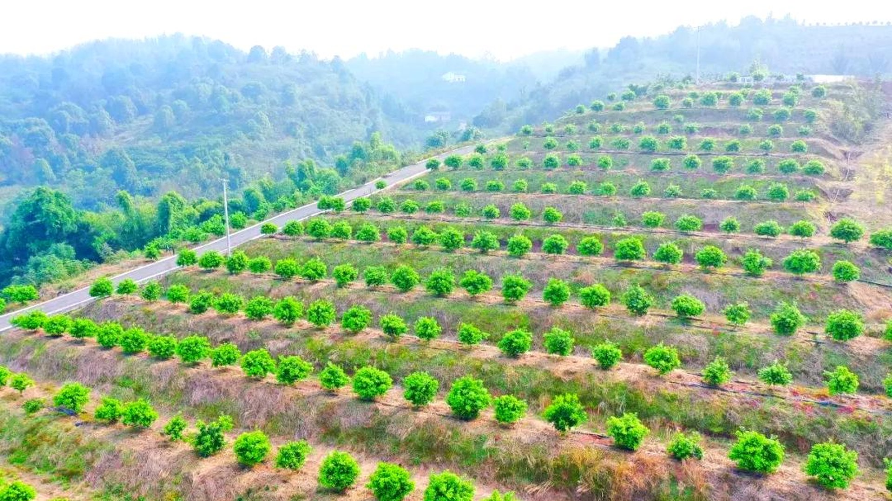
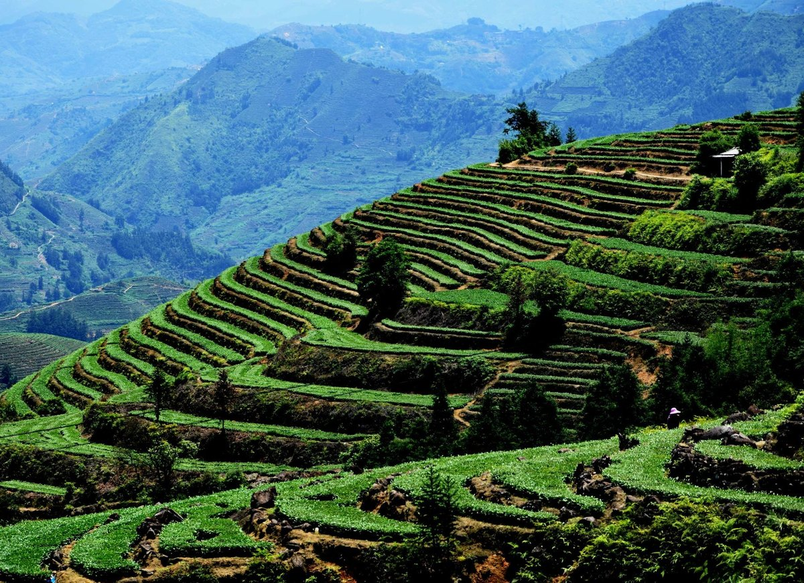

高山生态种植
合作果园平均海拔 660 米，昼夜温差大、云雾时间长。坚持人工除草、增施有机肥，让果实慢慢长、自然熟。
01
不是所有果园都长在武陵山。高海拔、多云雾、富硒土壤，加上一套看得见的管理流程，构成武陵果园的底气。
合作果园平均海拔 660 米，昼夜温差大、云雾时间长。坚持人工除草、增施有机肥，让果实慢慢长、自然熟。
01从果园档案、农事记录到采摘批次，系统完整留存每一批果子的来路。扫一扫，就能看到它来自哪片山、哪天采摘。
02以销定采、采后预冷、冷链发运。减少中间环节，让山里的鲜甜更快到达餐桌，也让果农拿到更实在的收益。
03从湘西到黔东北，从怀化到恩施，我们只和愿意把种植过程讲清楚的果园合作。
当季成熟、人工精选、产地直发。每一款产品都标注了产地和果园，买得明白，吃得放心。

武陵山区横跨湘、鄂、渝、黔四省市，山高谷深、气候温润，是猕猴桃、柑橘、梨、李等果树的天然适生区。但好风土并不自动等于好收入——分散的种植、模糊的标准、离散的市场，常常让果农的好收成卖不出好价钱。
“武陵果园”因此而生。我们把果园档案、种植记录、产品信息和订单服务搬进同一个系统，用一套轻量的数字化工具，帮助中小果园把“种得好”变成“讲得清、卖得远”。
采收消息、种植知识和山里的新鲜事，来自果园一线的记录。